Gomory Cutting Plane Method Example
John Mitchell
Consider the integer program
|
| (1) |
The LP relaxation in the Gomory form is
|
| (2) |
Pivot on the x0 entry in the first constraint to give the standard form
|
| (3) |
Solve using (primal) simplex. The initial basic feasible solution has basic variables x0 = 0 and x4 = 9, with nonbasic variables x1 = x2 = x3 = 0. Since we are maximizing, we need all reduced costs nonpositive at optimality. So choose x1 to enter the basis. The minimum ratio test shows that we pivot in the second constraint and x4 leaves the basis:
|
| (4) |
The new basic feasible solution has basic variables x0 = 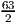 and x1 = 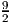, with nonbasic variables x2 = x3 = x4 = 0. This solution is optimal to the LP relaxation since all the reduced costs are nonpositive, with value .
Generate a Gomory cutting plane using the first constraint, since x0 is fractional. The fractional parts of the coefficients of the nonbasic variables are f2 = 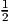, f3 = 0, and f4 = 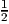. The fractional part of the right hand side is f0 = 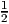. Thus, we get the valid cutting plane
|
| (5) |
Introducing a nonnegative integer slack variable x5, this cutting plane can be written equivalently as
|
| (6) |
Adding this constraint to the LP relaxation gives the tightened LP relaxation
|
| (7) |
This gives the basic (infeasible) solution with basic variables x0 = 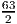, x1 = 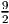, and x5 = -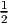. Since the reduced costs are of the correct sign for optimality, but some of the basic variables are negative, this can be optimized using the dual simplex algorithm.
Exercise: For this problem, we could add a redundant constraint x0 ≥ 0, and then the primal problem has the structure max{cT x : Ax = b,x ≥ 0}. The dual problem is then min{bT y : AT y ≥ c}. Show that the solution obtained by complementary slackness is dual feasible.
In the dual simplex method, we pick a basic variable that is negative to leave the basis. In this case, the only choice is x5, so we pivot on the third constraint. The entering variable is one of the nonbasic variables in this constraint with a negative coefficient, chosen using a minimum ratio test to ensure the reduced costs remain of the correct sign. The ratios are:
For x2: ratio is 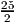∕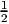 = 25. For x4: ratio is 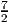∕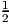 = 7.
Thus, x4 enters the basis, so we pivot on the x4 entry in the third constraint. The resulting tableau is
|
| (8) |
This is in optimal form: feasible with reduced costs all nonpositive (x0 = 28, x1 = 4, x4 = 1, x2 = x3 = x5 = 0). Since this solution is integral, it gives an optimal solution to the original integer program (1), namely x1 = 4, x2 = 0, x3 = 0, with optimal value x0 = 28.